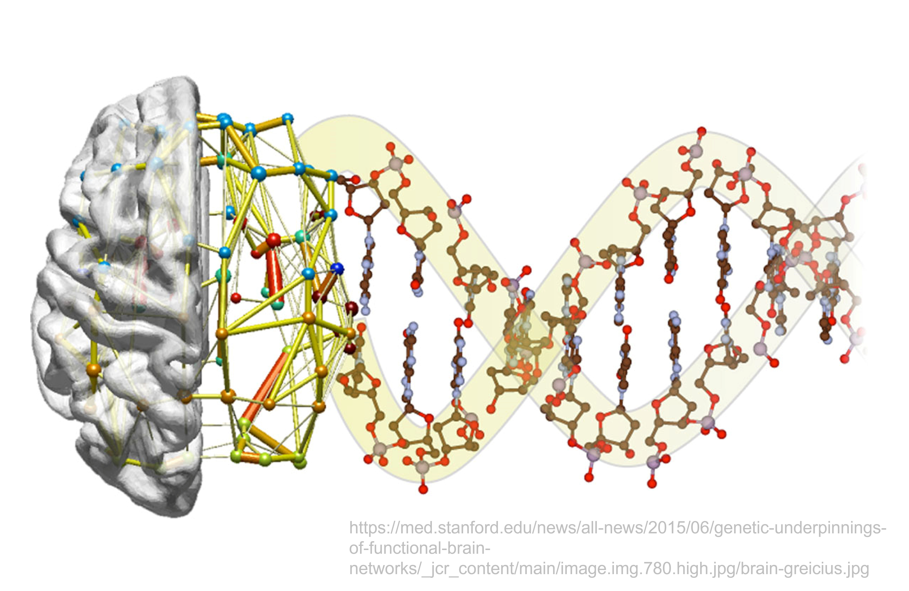
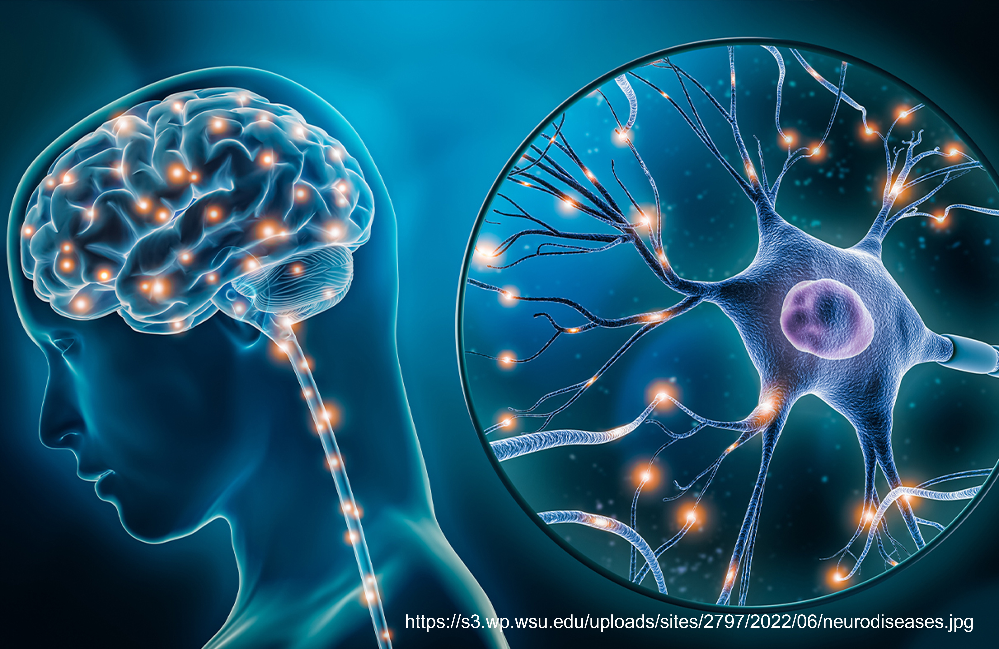
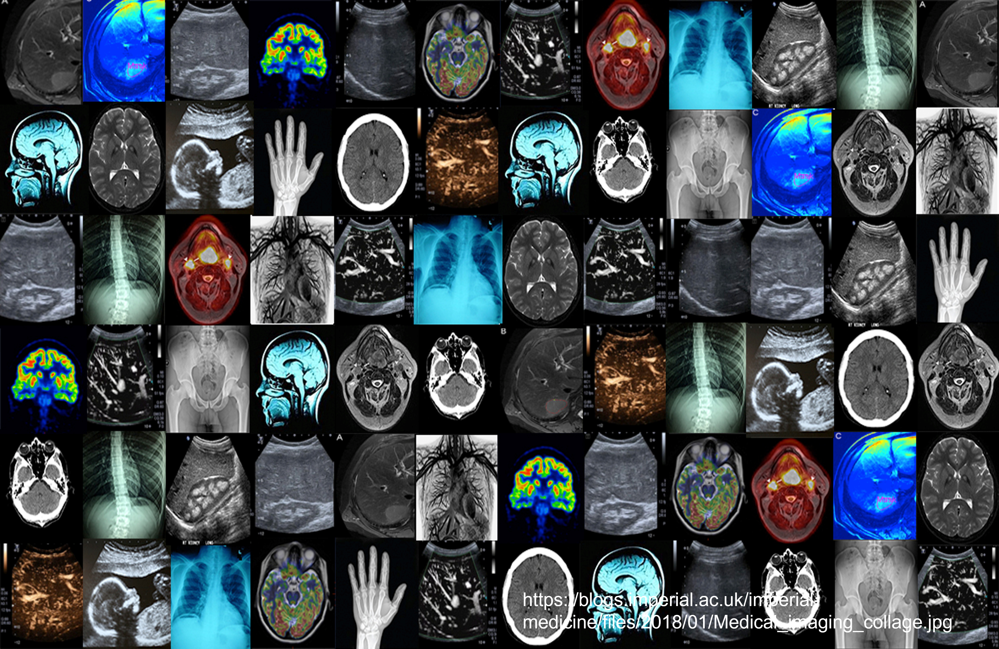
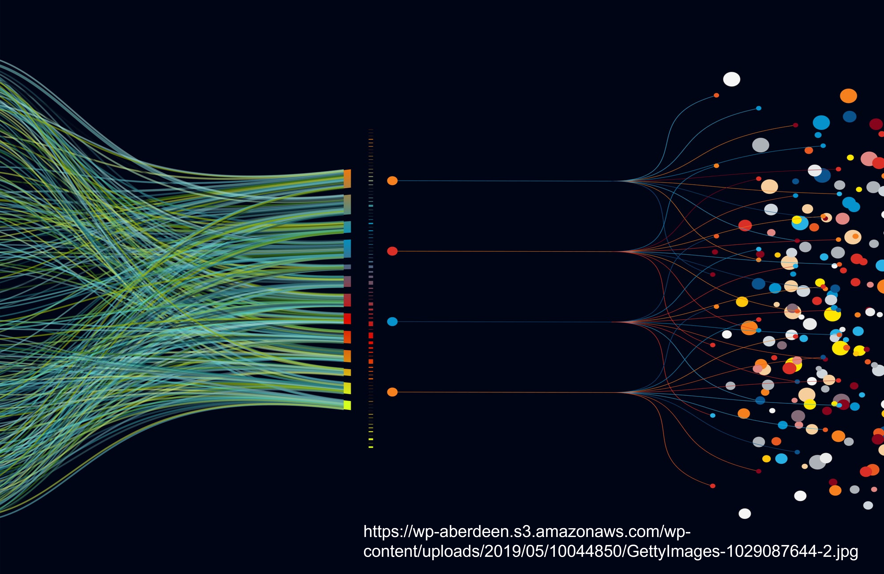

DDoong Yee
Details
Pukyong National University
Details
The development of AI framework that supports data analysis and decision making

Data informatics to link genetics and brain structure and function

Alzheimer’s disease & Parkinson’s disease

Using machine learning to identify disease biomarkers, subtypes or model.

Dimensionality reduction and integration of multimodal data